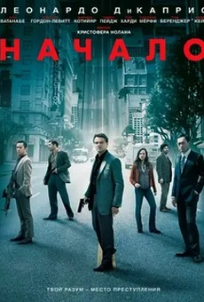

Начало (Inception), 2010
Научно-фантастический триллер Кристофера Нолана о профессиональном воре, который похищает секреты из снов людей. В главной роли — Леонардо Ди Каприо.
Нолан вынашивал идею фильма почти десять лет. Бюджет картины составил около 160 млн долларов, а мировые сборы превысили 830 млн долларов.
Фильм получил четыре премии «Оскар»: за операторскую работу, визуальные эффекты, звук и монтаж звука. Подробнее о фильме
 Мстители: Финал (Avengers: Endgame), 2019
Мстители: Финал (Avengers: Endgame), 2019
Завершение большой истории киновселенной Marvel, которая развивалась более десяти лет и включала 22 фильма. Режиссёры — братья Энтони и Джо Руссо.
Фильм собрал в мировом прокате около 2,8 млрд долларов и некоторое время был самым кассовым фильмом в истории. Продолжительность картины — 181 минута.
 Ла-Ла Ленд (La La Land), 2016
Ла-Ла Ленд (La La Land), 2016
Музыкальная мелодрама Дэмьена Шазелла о джазовом пианисте и начинающей актрисе в Лос-Анджелесе. Главные роли исполнили Райан Гослинг и Эмма Стоун.
Фильм получил 14 номинаций на «Оскар», повторив рекорд «Титаника» и «Всё о Еве», и выиграл шесть наград, в том числе за режиссуру и женскую роль.
")
")
")
")